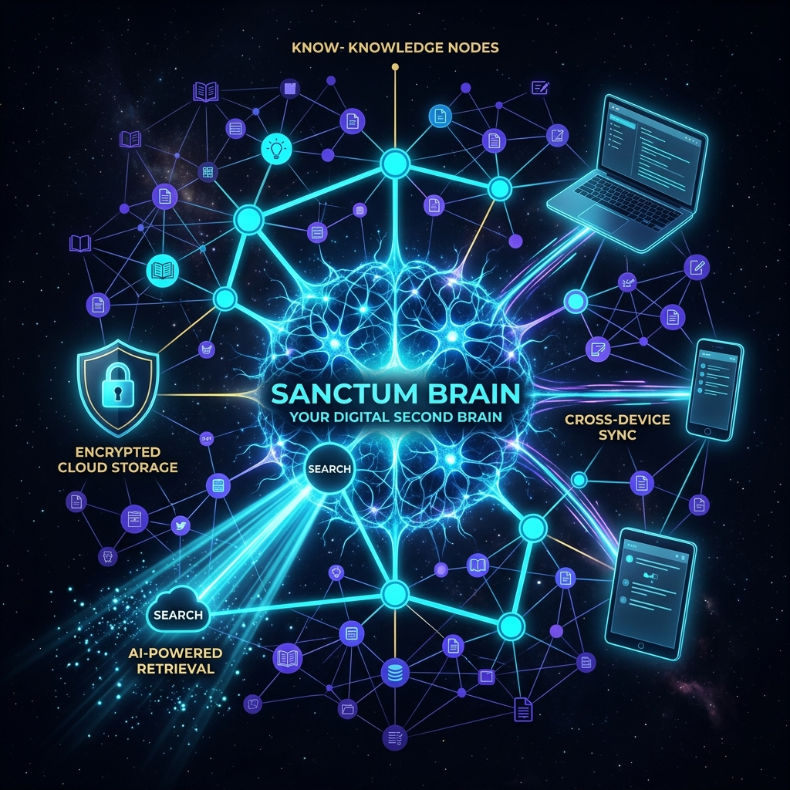
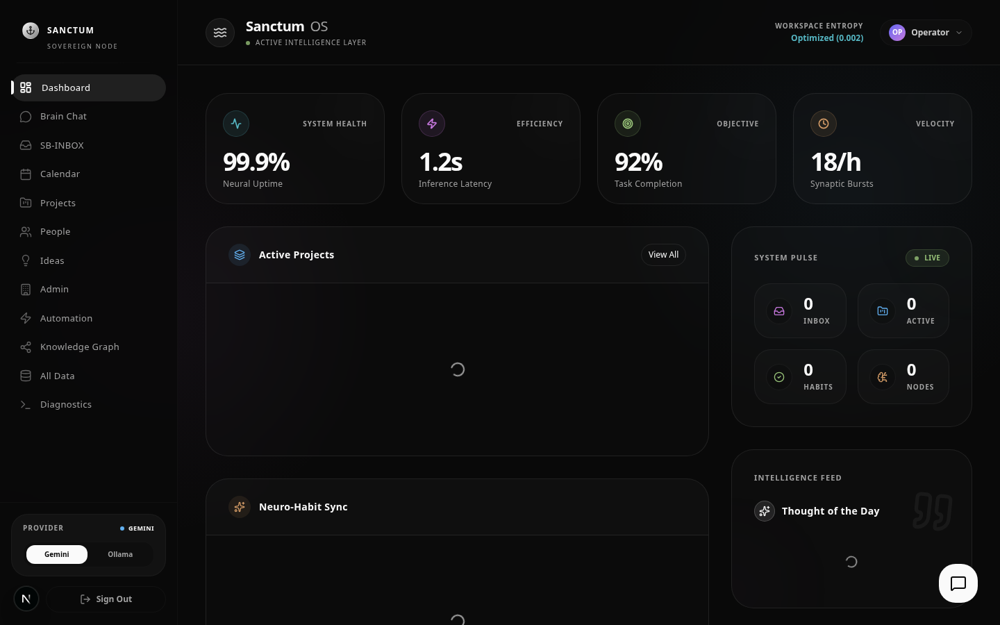

Your Sovereign Digital Mind
Sanctum Brain moves beyond static dashboards into a "Frontier + Edge" model where your data stays on your own infrastructure. It's a personal knowledge management system enhanced with proactive AI intelligence.
The architecture is distributed across a high-compute VPS backend, a Tauri desktop client, and a Flutter mobile app — all connected via secure Tailscale mesh networking.

Frontier + Edge Intelligence
🖥️ Frontier Neural Core
VPS-based backend with LangGraph state machines, OpenSearch vector intelligence, PARA-structured PostgreSQL, and Gemini 2.0 reasoning.
💻 Digital Canvas
Tauri desktop client with React/Three.js rendering, local system access, offline PII redaction, and edge SLM for zero-latency feedback.
📱 Nomad Interface
Flutter mobile app for secure, mobile-native access via gRPC/WebSockets. Full brain access from anywhere.
The Workspace
Beyond Static Dashboards
- A2UI (Agent-to-User Interface): The UI is dynamically generated based on continuous state monitoring and user intent — no static routes.
- The Pulse Security Ingress: Real-time telemetry (CPU, RAM, Disk) and PII scanning at the entry point before data reaches frontier models.
- Dynamic Graph Orchestration: Hot-swappable agentic skills via JSON config. Self-healing traversal with graceful fallbacks.
- MCP Integration: Model Context Protocol for standardized tool-calling across desktop and mobile clients.
- Physics-Based UI: Sensor fusion collapses a "UI Wavefunction" based on mouse patterns, window focus, and environmental context.
Tech Stack
- AI: LangGraph, Gemini 2.0, Hermes 3, 140+ Agency Personas
- Frontend: Next.js 15, React Flow, Three.js
- Backend: FastAPI, gRPC, Tortoise ORM
- Data: OpenSearch (Vector), PostgreSQL (PARA), Redis
Your Data, Your Silicon
🔒 PII Redaction
All user input is scrubbed for personally identifiable information at the edge before reaching frontier models. Privacy guaranteed.
🏰 Sovereign VPS
You own the infrastructure. Your data never trains public models. Full control of your knowledge graph and AI pipelines.
📡 The Pulse
Real-time telemetry monitoring for system health, security ingress validation, and automated threat detection.
Own Your Intelligence.
Sanctum Brain is open-source and built for personal sovereignty. Run it on your own infrastructure.